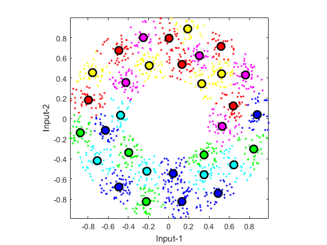

Vector Quantization
Vector quantization (VQ) can be viewed as an efficient techniques for k-means clustering, especially when the desired number of clusters is big. VQ is primarily designed for lossy data compression, particularly for image compression. A vanilla algorithm for VQ is:
- Set the number of clusters n = 1.
- Run k-means clustering with the number of clusters equal to n.
- If n is equal to or greater than the desired number of clusters, stop.
- Split each of the cluster centers into two by adding and subtracting a small random vector. Now n is twice the original value.
- Go back to the second step.
Contents
A basic example
The following example demonstrates the dendrogram after agglomerative hierarchical clustering.
DS=dcData(2); data=DS.input; codeBookSize=2^5; codebook=vecQuantize(data, codeBookSize);
No. of centers = 2, loop count = 23, distortion = 419.671 No. of centers = 4, loop count = 29, distortion = 159.002 No. of centers = 8, loop count = 10, distortion = 70.4106 No. of centers = 16, loop count = 27, distortion = 36.8577 No. of centers = 32, loop count = 23, distortion = 16.7132
Visualization of the clustering process
If you want to see the animation of the clustering process, try the next example:
DS=dcData(2); data=DS.input; codeBookSize=2^5; codebook=vecQuantize(data, codeBookSize, 1);
Iteration count = 1/200, distortion = 666.995681 Iteration count = 2/200, distortion = 398.013837 Iteration count = 3/200, distortion = 397.338761 Iteration count = 4/200, distortion = 397.046896 Iteration count = 5/200, distortion = 397.015041 Iteration count = 6/200, distortion = 397.000033 Iteration count = 7/200, distortion = 396.983420 Iteration count = 8/200, distortion = 396.959118 Iteration count = 9/200, distortion = 396.947712 Iteration count = 10/200, distortion = 396.942522 Iteration count = 11/200, distortion = 396.939958 Iteration count = 12/200, distortion = 396.939958 No. of centers = 2, loop count = 12, distortion = 396.94 Iteration count = 1/200, distortion = 396.939958 Iteration count = 2/200, distortion = 308.999806 Iteration count = 3/200, distortion = 156.822365 Iteration count = 4/200, distortion = 151.804074 Iteration count = 5/200, distortion = 151.628706 Iteration count = 6/200, distortion = 151.523489 Iteration count = 7/200, distortion = 151.499374 Iteration count = 8/200, distortion = 151.420555 Iteration count = 9/200, distortion = 151.290048 Iteration count = 10/200, distortion = 151.221895 Iteration count = 11/200, distortion = 151.158383 Iteration count = 12/200, distortion = 151.022197 Iteration count = 13/200, distortion = 150.877304 Iteration count = 14/200, distortion = 150.707826 Iteration count = 15/200, distortion = 150.583160 Iteration count = 16/200, distortion = 150.480883 Iteration count = 17/200, distortion = 150.441085 Iteration count = 18/200, distortion = 150.437347 Iteration count = 19/200, distortion = 150.434289 Iteration count = 20/200, distortion = 150.434289 No. of centers = 4, loop count = 20, distortion = 150.434 Iteration count = 1/200, distortion = 150.434289 Iteration count = 2/200, distortion = 85.203656 Iteration count = 3/200, distortion = 77.168728 Iteration count = 4/200, distortion = 69.696962 Iteration count = 5/200, distortion = 65.812744 Iteration count = 6/200, distortion = 65.022859 Iteration count = 7/200, distortion = 64.884191 Iteration count = 8/200, distortion = 64.820092 Iteration count = 9/200, distortion = 64.778255 Iteration count = 10/200, distortion = 64.755783 Iteration count = 11/200, distortion = 64.743043 Iteration count = 12/200, distortion = 64.732253 Iteration count = 13/200, distortion = 64.710835 Iteration count = 14/200, distortion = 64.692499 Iteration count = 15/200, distortion = 64.678716 Iteration count = 16/200, distortion = 64.674363 Iteration count = 17/200, distortion = 64.671897 Iteration count = 18/200, distortion = 64.669874 Iteration count = 19/200, distortion = 64.664179 Iteration count = 20/200, distortion = 64.649521 Iteration count = 21/200, distortion = 64.635290 Iteration count = 22/200, distortion = 64.621032 Iteration count = 23/200, distortion = 64.565827 Iteration count = 24/200, distortion = 64.528758 Iteration count = 25/200, distortion = 64.498808 Iteration count = 26/200, distortion = 64.439833 Iteration count = 27/200, distortion = 64.381663 Iteration count = 28/200, distortion = 64.271401 Iteration count = 29/200, distortion = 64.165775 Iteration count = 30/200, distortion = 64.120384 Iteration count = 31/200, distortion = 64.115210 Iteration count = 32/200, distortion = 64.112488 Iteration count = 33/200, distortion = 64.107796 Iteration count = 34/200, distortion = 64.107796 No. of centers = 8, loop count = 34, distortion = 64.1078 Iteration count = 1/200, distortion = 64.107796 Iteration count = 2/200, distortion = 37.512352 Iteration count = 3/200, distortion = 35.994844 Iteration count = 4/200, distortion = 35.485805 Iteration count = 5/200, distortion = 35.214363 Iteration count = 6/200, distortion = 35.083686 Iteration count = 7/200, distortion = 35.039646 Iteration count = 8/200, distortion = 35.022346 Iteration count = 9/200, distortion = 35.022346 No. of centers = 16, loop count = 9, distortion = 35.0223 Iteration count = 1/200, distortion = 35.022346 Iteration count = 2/200, distortion = 23.254436 Iteration count = 3/200, distortion = 19.562863 Iteration count = 4/200, distortion = 17.905093 Iteration count = 5/200, distortion = 17.163781 Iteration count = 6/200, distortion = 16.716940 Iteration count = 7/200, distortion = 16.337888 Iteration count = 8/200, distortion = 16.122505 Iteration count = 9/200, distortion = 16.028587 Iteration count = 10/200, distortion = 15.952479 Iteration count = 11/200, distortion = 15.906338 Iteration count = 12/200, distortion = 15.820501 Iteration count = 13/200, distortion = 15.693314 Iteration count = 14/200, distortion = 15.603494 Iteration count = 15/200, distortion = 15.536959 Iteration count = 16/200, distortion = 15.454107 Iteration count = 17/200, distortion = 15.413968 Iteration count = 18/200, distortion = 15.388903 Iteration count = 19/200, distortion = 15.374399 Iteration count = 20/200, distortion = 15.370766 Iteration count = 21/200, distortion = 15.359999 Iteration count = 22/200, distortion = 15.348692 Iteration count = 23/200, distortion = 15.342013 Iteration count = 24/200, distortion = 15.339706 Iteration count = 25/200, distortion = 15.335837 Iteration count = 26/200, distortion = 15.332272 Iteration count = 27/200, distortion = 15.330228 Iteration count = 28/200, distortion = 15.328661 Iteration count = 29/200, distortion = 15.328661 No. of centers = 32, loop count = 29, distortion = 15.3287
Reference
Y. Linde, A. Buzo, and R.M. Gray, "An Algorithm for Vector Quantizer Design", IEEE Transactions on Communications, vol. 28, pp. 84-94, 1980.
Copyright 2011-2016 Jyh-Shing Roger Jang.